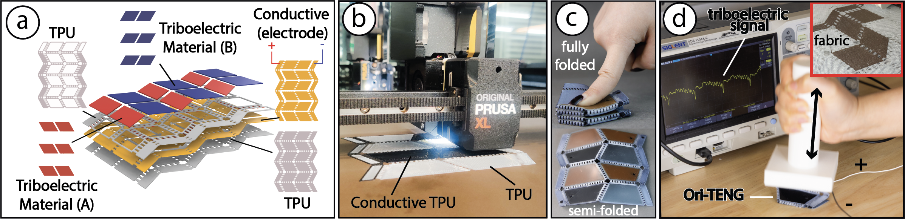

Publication
Marwa AlAlawi, Kexin Wang, Regina Zheng, Adelene Chan, Martin and Stefanie Mueller.
Ori-TENG: 3D Printed Origami Tessellations as Triboelectric Nanogenerators for Self-powered Sensing and Energy Harvesting
In Proceedings of UIST'25 Adjunct.
DOI PDF Video
Video
Ori-TENG: 3D Printed Origami Tessellations as Triboelectric Nanogenerators for Self-powered Sensing and Energy Harvesting

We introduce Ori-TENG, a design and fabrication framework for 3D printed origami tessellations that function as triboelectric sensors and energy harvesters. Ori-TENG structures are 3D printed flat in a single step, then folded, with internal electrical routing optimized for both folding mechanics and triboelectric performance
INTRODUCTION
Multimaterial 3D printing has emerged as a powerful tool for the fabrication of interactive components within the HCI community. While traditionally this 3D printing method turns otherwise passive mechanical components into interactive elements, researchers have demonstrated how multimaterial printing with conductive filament seamlessly enables sensing capabilities in mechanically active components during printing [1, 7, 9, 12, 15].
With sensing being one facet for achieving interactivity, researchers have begun exploring more ways to make structures more interactively-rich; for example, by having a single geometry support multiple electrical functionalities simultaneously. One interaction principle that achieves this dual-function is called the triboelectric effect. Thus, by leveraging the triboelectric effect, the same geometric structure can serve both energy harvesting [2, 3, 14, 17, 20] and sensing [4, 8, 10, 19] purposes.
Triboelectric sensors or energy harvesters comprise a simple structure and a basic working principle. They rely on the material pairing and layering of conductive and non-conductive (triboelectric) materials, with the working principle based on contact electrification between the materials. This means that geometries exhibiting reciprocal motion (sliding or spring-like movement) and have large contact areas, like folded or spring-like structures, are most suited for this principle. In fact, origami tesselations, with their spring-like geometry and many folds, have emerged as promising candidates [5, 6, 13, 16, 18].
However, scaling triboelectric systems within origami tessellations remains a challenge. Most prior work relies on external wiring, which becomes inefficient as tessellation complexity increases—especially since each origami pattern has unique folding requirements, and the triboelectric effect demands specific material assignments on contacting faces. Moreover, the design space of origami structures suited for triboelectric applications, along with the criteria for evaluating them, has yet to be systematically explored.
In this paper, we introduce Ori-TENG, a design and fabrication framework using conductive multi-material 3D printing for triboelectric origami tessellations. Ori-TENG contributes:
- A systematic exploration of origami tessellation design space and metrics that influence triboelectric effect performance
- An internal routing strategy that requires only two wires, regardless of tessellation scale
- A multi-material fabrication pipeline compatible with the triboelectric effect
ORITENG
Ori-TENG focuses on flat origami structures that can be folded post-printing and scaled by increasing base units—hence, we limit our design space to origami tessellations. We surveyed tessellations ranging from lower-dimensional patterns (primitives), like Miura-Ori, to higher-dimensional structures [11]. To evaluate the suitability of these tessellations for the triboelectric effect, we used three main criteria: 1) whether the structure is reconfigurable (i.e., supports reciprocal motion), 2) whether contact area overlap exceeds 75%, 3) and whether internal wiring in a single layer is feasible. In total, we evaluated 19 structures. The results of this formative study are shown in Fig. 2 and Fig. 3
ORITENG: Structure and Routing
Ori-TENG’s structure consists of four material layers, illustrated with the Miura pattern in Fig. 1-a. The first layer is TPU (0.2mm thick), providing elasticity and a spring-like form. The second layer uses conductive TPU (0.3mm thick) to enable both flexibility and conductivity. Layers three and four include discrete triboelectric material pairs (A and B) (0.2mm thick), electrically grouped by material, along with insulating TPU (0.2mm thick). The Small side cells, which we refer to as “power rails,” route to either material A or B, representing positive and negative polarity. Only one unit per rail is exposed for wiring, reducing the system to two external wires. Material assignment is based on triboelectric principles, ensuring contact occurs between opposing materials during deformation.
The expanding routing strategy works for six structures (Fig. 3). The remaining four require conductive routing on two separate layers, which increases overall thickness by at least 0.5mm (by adding conductive and insulative layers). This added bulk can hinder foldability, making those designs less practical. For this reason, we focus only on structures that use single-layer routing and maintain foldability.
Fabrication pipeline
We use a Prusa XL 3D printer for multimaterial printing (Fig. 1-b). TPU is used as the flexible insulating material, and Filaflex conductive TPU for the conductive layers. For the triboelectric pair, we selected PVDF and Nylon due to their printability. Other pairs are also viable [21].
CONCLUSION & FUTURE WORK
With Ori-TENG, we demonstrated how fully 3D printed structures can satisfy both origami folding and triboelectric effect requirements—offering a flexible, scalable approach while limiting external wiring to only two. While origami folds typically involve face-to-face contact on both their inner and outer surfaces, our prints were only on one side to keep the structures thin for better folding. This design decision also limited our exploration to six key patterns rather than ten. In future work, we aim to leverage both sides to potentially double the contact area while ensuring small thickness, electrical isolation, and minimal external wiring. Leveraging 3D printing for Ori-TENG also opens opportunities for direct integration with fabric substrates, which we plan to further explore in future work (Fig. 1-d).
ACKNOWLEDGMENTS
We thank the MIT Center for Bits and Atoms for allowing us to use their Prusa XL 3D printer.
REFERENCES
- Marwa Alalawi, Noah Pacik-Nelson, Junyi Zhu, Ben Greenspan, Andrew Doan, Brandon M Wong, Benjamin Owen-Block, Shanti Kaylene Mickens, Wilhelm Jacobus Schoeman, Michael Wessely, Andreea Danielescu, and Stefanie Mueller. 2023. MechSense: A Design and Fabrication Pipeline for Integrating Rotary Encoders into 3D Printed Mechanisms. In Proceedings of the 2023 CHI Conference on Human Factors in Computing Systems (CHI ’23). ACM, New York, NY, USA, Article 626, 14 pages. https://doi.org/10.1145/3544548.3581361
- Nivedita Arora and Gregory D Abowd. 2018. ZEUSSS: Zero energy ubiquitous sound sensing surface leveraging triboelectric nanogenerator and analog backscatter communication. In Adjunct Proceedings of the 31st Annual ACM Symposium on User Interface Software and Technology. 81–83.
- Nivedita Arora et al. 2018. SATURN: A Thin and Flexible Self-Powered Microphone Leveraging Triboelectric Nanogenerator. Proc. ACM Interact. Mob. Wearable Ubiquitous Technol. 2, 2, Article 60. https://doi.org/10.1145/3214263
- Christopher Chen et al. 2020. SPIN: Self-powered paper interfaces bridging triboelectric nanogenerator with folding paper creases. In Proceedings of TEI. 431–442.
- Jihoon Chung et al. 2021. Triangulated Cylinder Origami-Based Piezoelectric/Triboelectric Hybrid Generator to Harvest Coupled Axial and Rotational Motion. Research 2021. https://doi.org/10.34133/2021/7248579
- Jihoon Chung et al. 2021. Triangulated cylinder origami-based piezoelectric/triboelectric hybrid generator to harvest coupled axial and rotational motion. Research (2021).
- Jun Gong, Olivia Seow, Cedric Honnet, Jack Forman, and Stefanie Mueller. 2021. MetaSense: Integrating Sensing Capabilities into Mechanical Metamaterial. In UIST ’21. ACM, 1063–1073. https://doi.org/10.1145/3472749.3474806
- Usman Khan et al. 2017. Graphene tribotronics for electronic skin and touch screen applications. Advanced Materials 29, 1 (2017), 1603544.
- Hsuanling Lee et al. 2024. Fluxable: A Tool for Making 3D Printable Sensors and Actuators. In UIST Adjunct ’24. ACM, Article 74. https://doi.org/10.1145/3672539.3686342
- Xin Liu et al. 2022. Tribo Tribe: Triboelectric Interaction Sensing with 3D Physical Interfaces. In CHI EA ’22. ACM, Article 272. https://doi.org/10.1145/3491101.3519759
- Marco Meloni et al. 2021. Engineering origami: A comprehensive review of recent applications, design methods, and tools. Advanced Science 8, 13 (2021), 2000636.
- Doga Ozbek, Marwa AlAlawi, and Michael Wessely. 2025. AcceloPrint: Fabricating Customizable Accelerometers with Multi-Material 3D Printing. In CHI EA ’25. ACM, Article 59. https://doi.org/10.1145/3706599.3720059
- Yafeng Pang et al. 2022. Waterbomb-origami inspired triboelectric nanogenerator for smart pavement-integrated traffic monitoring. Nano Research 15, 6 (2022), 5450–5460.
- Pinshu Rui et al. 2020. High-performance cylindrical pendulum shaped triboelectric nanogenerators driven by water wave energy. Nano Energy 74 (2020), 104937.
- Rei Sakura et al. 2023. LattiSense: A 3D-Printable Resistive Deformation Sensor with Lattice Structures. In SCF ’23. ACM, Article 2. https://doi.org/10.1145/3623263.3623361
- Kai Tao et al. 2020. Miura-origami-inspired electret/triboelectric power generator for wearable energy harvesting. Microsystems & Nanoengineering 6, 1 (2020), 56.
- Ji Wan et al. 2020. A flexible hybridized electromagnetic-triboelectric nanogenerator and its application for 3D trajectory sensing. Nano Energy 74 (2020), 104878.
- Po-Kang Yang et al. 2015. Paper-Based Origami Triboelectric Nanogenerators and Self-Powered Pressure Sensors. ACS Nano 9, 1 (2015), 901–907. https://doi.org/10.1021/nn506631t
- Tianhong Catherine Yu et al. 2023. Skinergy: Machine-Embroidered Silicone-Textile Composites as On-Skin Self-Powered Input Sensors. In UIST ’23. ACM, Article 33. https://doi.org/10.1145/3586183.3606729
- Qiang Zheng et al. 2016. In vivo self-powered wireless cardiac monitoring via implantable triboelectric nanogenerator. ACS Nano 10, 7 (2016), 6510–6518.
- Haiyang Zou et al. 2019. Quantifying the triboelectric series. Nature Communications 10, 1 (2019), 1427.